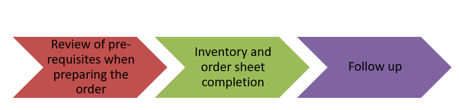

MedOrder BF V1 en
Source document: MedOrder BF V1 en.docx (toolbox, 3. Forecasting and ordering)
Table des matières
2 Acronyms 3
3 Definitions 4
4 Introduction 6
5 Type of MSF Logistique orders 6
6 The different levels and people involved in the process 7
7 The prerequisites 8
7.1 Project Medical Standard List 8
7.2 Chronogram of orders 9
7.3 Reference documents and tools 10
7.4 Pharmacy software and stock cards 12
7.5 Segmentation of MSL articles 12
7.5.1 Segmentation according to the type of consumption 12
7.5.2 WHO therapeutic classification 14
7.5.3 VED and ABC classification 14
7.5.4 Shelf life 14
7.5.5 Importation constraints 15
7.5.6 Different sources of supply 15
8 Review of pre-requisites when preparing the order 16
8.1 Review of the order chronogram 16
8.2 Review of the MSL and FMCs (for C) & Maximum Stock level (for NC) 16
8.3 Order narrative 18
9 Inventory and order sheet completion 18
9.1 Full inventory of the medical stock 18
9.2 Stock reallocation between different projects 19
9.3 Completion of the medical order sheet 19
9.4 Final review of the medical order 20
10 Follow up 21
10.1 Review of the order by the coordination and by HQ 21
10.2 Analysis of “Projected Available Stock” on receipt 22
10.3 Upload of the project medical order on MSF Logistique Portail 23
10.4 MSF Logistique Portail 23
10.5 Validation of the Proformas 24
10.6 Orders chronogram follow up 24
10.7 Backorders follow up 25
10.8 Transport 25
10.9 Reception and report 25
Acronyms
ARV = Anti-RetroVirals
ESC = European Supply Center
ETA = Estimated Time Arrival
FMC = Forecasted Monthly Consumption
FMC LT = Forecasted average Monthly Consumption during the Lead Time
FMC PC = Forecasted average Monthly Consumption during the Period to Cover
HoM = Head of Mission
HQ = Head Quarters
IMO = International Medical Order
ISP = Inter-Sectional Pharmacist
LT = Lead Time
MAP = Mise A Plat
MedCell = Medical responsible of the Cell
MedCo = Medical Coordinator
MML = Medical Master List
MoH = Ministry of Health
MSL = Medical Standard List
NCD = Non-Communicable Disease
NSL article = Non-Standard Local article
NST article = Non-Standard article
OC = Operational Center
OCP = Operational Center Paris
OT = Operation Theatre
Past-AMC = Past Average Monthly Consumption
PC = Coverage Period (Period to Cover)
PEP = Post Exposure Prophylaxis
PMR = Project Medical Referent
RTU = Ready To Use
RUTF = Ready to Use Therapeutic Food
SS = Safety Stock
STD article = Standard article
TB = Tuberculosis
Definitions
Backorders:
All articles and quantities previously ordered but not yet received at order point (at project level if decentralized stock strategy, at central level if central stock strategy).
Pipeline:
All articles and quantities ordered and agreed to be received as a borrow or a donation but not yet received. Pipeline = backorders + borrowing or donation not yet received.
Consumption-based article:
Article for which the consumption data (past with AMC, expected with FMC) are relevant for stock analysis and ordering.
Forecasted average Monthly Consumption (FMC):
Estimated quantity of an article that will be used on average over a month; can be defined for a specific period (for the LT (Lead Time) or PC (Coverage Period), for the coming month, for the 3 coming months, etc.).
Lead Time (LT):
Time (expressed in number of months (in the order tool) or weeks (in the orders chronogram) or days (in the Standard Lead Time table) from the preparation of the order to its receipt at order point. It therefore includes all stages of the order process (inventory, calculation, revision, validation, preparation at MSF Logistique, pre-clearance, transport, and delivery to the order point); so, it is not only the time for transport; but it can be different depending on the mode of transport.
The LT starts at the stock date used for the calculation of the needs (it is recommended to use the inventory date). During this period, items in stock will be consumed/donated or will expire, some others will be entered into the stock.
Medical Master List (MML):
List of articles validated for use by the Medical Direction of each Operational Center (OC); includes the OC’s restrictions (for which Project and Mission and if agreement of medical referent is needed). Project team must crosscheck their project MSL with the OC MML to ensure that all articles included are validated for use in their project.
NON-Consumption based article:
Article for which the consumption data are NOT relevant for stock analysis and ordering; it is preferable to use a minimum stock and a maximum stock level.
NSL article = Non-Standard Local article:
Article validated by at least one OC for use in the field and only supplied locally because of international supply issues. It must follow local purchase validation procedure.
NST article = Non-Standard article:
Article not validated by the 5 OCs but chosen by one (or more) OC with the agreement of the medical/logistic director, used by one or few OCs and that can be sourced from at least one European or Regional supply centre.
Past Average Monthly Consumption (Past-AMC):
Quantity of an article used on average over a month, calculated using the sum of the monthly consumptions during a period (in number of months) divided by this same number of months.
Only the periods when the item was available should be considered.
Consumption may be different from the sum of all OUT because, for the calculation of the past AMC, only activity-related movements are considered. Unplanned donations, losses due to expiry, etc. are not considered.
It cannot be a negative value.
Coverage Period:
Number of months covered by an order; time (expressed in number of months) that order must cover between 2 successive planned receipts.
Project Medical Standard List (MSL):
List of the medical items needed for the management of the activities; should be a compilation of the different lists of articles needed for the different activities of the project. Project MSL reflects the medical strategy of the project.
Shortage (“Real” Stock Out):
Article part of the project MSL with 0 stock level and impossible to deliver after request.
Safety Stock (SS):
For a Consumption-based article, quantity (expressed in number of months) to cover the needs in case of supply delay or unexpected increase of the consumption. In normal conditions, the project should not use this “extra” stock before reception of the order.
STD article = Standard article:
Article corresponding to the MSF policies and validated by the 5 OCs as the best choice for field use and that can be sourced from at least one European or Regional supply centre.
Stock Max:
For a Non-Consumption-based article; it corresponds to a Maximum Stock Level to be reached when ordering; can be defined for a specific period and it needs to be re-evaluated according to the context and its evolution
Stock Month:
For a Consumption-based article, remaining stock quantity (expressed in number of months).
Introduction
Medical order preparation is an interdisciplinary activity to ensure products availability. Lot of people are involved at different steps of the process, so communication is crucial.
This document is intended to support the people in charge of the creation of the medical order. It compiles all the information linked to the medical order preparation, including the description of the pre-requisites, even if they are already described in other guidelines or memo.
The objectives are:
to build up or replenish the medical stock of the project that supplies the medical wards, hospital pharmacy, mobile clinics, health structures supported, a prepositioned stock, etc.
to deliver the right products, of good quality, in the right quantity, at the right time, at the right place and at the right price, for the project to be able to run the medical activities.
This must ensure the availability of articles (avoid shortages) while avoiding sleeping stocks, overstocks, and waste (destruction of expired products).
Ordering can be a tricky activity knowing contexts where MSF intervenes and the fact that orders are usually done 3 times a year for most of the items, so anticipation and forecast are essential.
The basic principles are the same, independently if the projects order to ESC or local suppliers.
This document will focus on regular project medical orders to MSF Logistique (European Supply Center (ESC) in France - Bordeaux) because, according to MSF medical procurement policy, International Procurement is the 1st choice; reason why the term “International Medical Order (IMO)” is sometimes used.
The 3 main steps of Project Medical Order:

Type of MSF Logistique orders
It exists different types of project medical orders; the qualification depends on the requested delivery date.
REGULAR medical orders, done according to a medical orders chronogram, specific to the project / mission. Time for preparation at MSF Logistique is more than 20 working days (around 6 weeks).
ASAP (meaning “As Soon As Possible”) medical orders, NOT respecting the medical orders chronogram (done between 2 regular orders).
They should be limited to vital articles with only the quantities needed to fill in the gap until the next reception; they should not replace regular orders.
At MSF Logistique level, on request of the Cell, they will try to reduce the duration of the preparation. Time for preparation at MSF Logistique level is between 6 and 20 working days.
Goods are usually sent by air to reduce the Lead Time (LT), meaning the cost of transport would be higher; reason why the needs must be carefully assessed (For some countries ASAP orders can also be requested by sea).
The main reason should be specified to the medical operator: delay according to chronogram, needs for an emergency response, increase of activity, new activity, change of protocol, underestimation of needs, replacement of stock, ...
“Casier depart” orders that are “small volume ASAP orders”. The goods are carried on by someone in hand or suitcase luggage, they should be exceptional as it is not without risk for the person.
EMERGENCY orders, usually prepared from a prepositioned stock allowing a fast preparation: between 24h and 72h (working days) at MSF Logistique level. Emergency orders can come from a mission managed by a regular cell or the Emergency Cell, but the use of the pre-positioned emergency stock is validated only by the Emergency Cell.
The different levels and people involved in the process
| At Project level |
At Coordination level |
At Cell level |
| The project medical order is prepared by the entire project medical team with contribution of the different supervisors and specialists (biomedical responsible, surgeons, …). Real teamwork under the coordination of the binome “Project Medical Referent (PMR) + project pharmacist”. |
The MedCo, with the support of the PharmaCo, has the responsibility to analyze and approve the operational needs determined by the project medical team, according to the strategic evolution of the medical activities and the evolution of the protocols.
Depending on the cost of the order, the Head of Mission may also have to approve it. |
The MedCell is the one who will perform the final validation and initiate the request for quotation to the ESC (MSF Logistique). Depending on the cost of the order, the Cell Responsible may also have to validate it. |
The medical referents of the medical department can give support upon request on below aspect:
Analyzing consumption data (comparison consumption data vs medical data) and prescriptions to detect any irrational use or underuse.
Defining articles needed for the activities (MSL review), and the vital ones.
Determining:
The prerequisites
The MSL, orders chronogram and forecast (FMC & Stock Max) have been previously determined to create the budget. The elaboration of an order consists in the revision and adaptation of these prerequisites.
Project Medical Standard List
Before the quantification step, there is the eventual step of defining/reviewing the list of necessary articles for the management of the activities, called project MSL, that should reflect the medical strategy of the project and allow not to forget anything but also not to order unnecessary or obsolete items.
For the selection of the articles (or review of project MSL), if possible, prefer STD items to NST items, for which the supply is more secure.
The WHO therapeutic classification is useful to limit as much as possible redundancies/duplicities, and so the number of drugs (rationalization). Each drug is affiliated with 1 or more therapeutic categories in the OCP MML (for instance: 13.1 - Antifungal medicines, 17.2 - Antiemetic medicines, etc.)
Using the OCP MML, containing the list of all articles validated for MSF OCP activities, the team needs to check if all articles selected are validated, if restrictions are respected and if some referents agreements are necessary, otherwise the order will be blocked at MSF Logistique and the LT will be increased.
If the team wants to request for a new item to be introduced in the OCP MML (because an alternative is not already present): keep in mind that the time needed for the validation and sourcing could be consequent and take several weeks (and sometimes not even succeed).
The review of the project MSL is done at least once a year. The best moment to do it is before the MAP and the submission of the budget knowing that the finalization must be done just after the validation of the budget (when the (new) activities are finally validated or not).
Planning of orders is a key step, it will:
Make the supply chain more reliable, ensuring a strict periodicity of "order receipts" to avoid shortages as much as possible.Ensure that the team prepares the orders on time and is ready for receptions.Help with the planification of the activities according to the expected reception date of the order.Regular orders must follow a specific chronogram that is updated regularly, ensuring everyone, at all levels (from the project to MSF Logistique) is informed and prepared on time. On mission, relevant people need to have access to it to know when the next order needs to be prepared and when the reception will be; medical activities may depend on it.
Its update is the responsibility of the PharmaCo, with the support of the person in charge of supply for the mission.
The more the chronogram is respected, the better the order will arrive on time without stressing the supply chain, reason why it is crucial that people respect it.
The keys persons involved in the order process need to be informed of the dates of their required availability / presence:
For the preparation/discussions: Pharmacy team, PMR, Head nurse, Supervisors, Biomedical responsible, lab supervisor etc. For the validation: PharmaCo, MedCo and MedCell (and HoM and Cell Responsible according to the cost).
3 order parameters, expressed in number of months, appear in the medical order chronogram:
Lead Time (LT):Before each project order, it is necessary to make sure that the chronogram is updated according to the most recent real times and to the current context. The duration of the LT should be discussed between PharmaCo, person in charge of the supply for the mission, Supply Referent, LogCell and medical operator. LT must be estimated as accurately as possible, reflecting as much as possible the reality.
The preparation date of order is calculated retrospectively from the desired receipt date, based on the estimated LT.
For example, if the project team is due to receive its order beginning of July and the estimated LT is 5 months, they should plan to do an inventory 5 months earlier, (on the 1st of February) and discuss the needs (MSL, FMC and Maximum stock Levels) with the whole medical team in January.
It is necessary to readjust the chronogram after review of the Standard Lead Time.
Coverage Period (PC):For the periodicity, different parameters need to be considered: the project storage capacity, the management capacity by the team, the security situation at field level, the forecast accuracy and reliability, the products shelf life, and the importation constraints for some items.
The longer the PC is, the more difficult to anticipate/predict the needs (accuracy of FMC and Stock Max) and the more space is required for storage. It may sometimes be necessary to reduce the PC when storage capacity is limited, or even for security reasons.
For most of the articles, the orders are every 4 months but there might be a specific chronogram for some products.
Safety Stock (SS):The SS is usually half of the LT, but to minimize the risk of shortage it can be adapted to each item by considering:
- the reliability of the supply,
- the quality of the forecast (FMC): future consumption difficult to predict,
- the criticality / vitality of the item for the project.
More important should be the SS if the LT is important, if the supply is unreliable, if the forecast is difficult (especially if the context is unstable), if the item is vital. On the contrary, SS should be smaller if the LT is short, if the supply is easy, if needs are well defined/known and if the article is not essential.
Keep in mind that increasing the SS could affect the budget and the volume to store (consider the storage capacity).
Be sure the reference documents and tools are well known, and the latest versions are used:
| Tool |
Use and interest for the medical order |
Where to find the tool |
| Medical guidelines and protocols |
Review and update of the project MSL. Estimation of the FMC. |
Medical tool box |
| OCP MML and templates |
Review and update of the project MSL. |
Pharmacy tool box |
| Medical Catalogues and "summary of changes" |
Review and update of the project MSL.
Kits catalogue and different modules of the "Hospital Kit" that may be useful for emergency responses or for estimating the needs for new activities |
https://msfintl.sharepoint.com/sites/msfintlcommunities/MSFCatalogues |
| UNICAT |
Same as above |
https://unicat.msf.org/fr |
| MSF OCP medical order template |
Instructions for completion of the order, automatic calculations |
Pharmacy tool box |
| MSF Logistique catalogue |
Information about packaging, volume, weight, price. |
https://espacecommande.msflogistique.org/portail/index/index |
| Stock management software |
Stock level and expiry dates, Average Monthly Consumption, distribution data, |
Supply toolbox for Isystock settings. Last Isystock back up. |
| MSF Medical data collection tool (PRAXIS or other) |
Number of consultations, recorded morbidities, etc.
The correlation between morbidities (and number of patients) and the recommended basic treatment will help analyzing stock / consumptions and anticipating needs.
Note that only one morbidity is recorded per patient in PRAXIS even if a patient suffered from both malaria and diarrhea for example. The estimation of consumption may be lower than the reality |
Praxis |
| Other medical data |
Incidence and prevalence data of the different pathologies encountered in the project intervention area. |
Provided by the medical team |
| Biomedical referential |
Articles linked to a biomedical equipment, items and quantities to have in back up (in stock), split in term of responsibility:
accessories and consumables to be part of medical orderspare parts to be ordered by logistics. |
https://msfintl.sharepoint.com/sites/SP-BDX-msflog-op-general-info/products-information/bio-medical-equipment-tech-notice |
| Memo |
Mapping of biomedical equipment on the project. It can be relevant to compare MEMO data with Isystock data to be sure that information is the same. |
Access provided by logistic coordinator or biomed supervisor. |
| Specific tools for calculating needs |
Tools to calculate FMC or maximum stock for specific disease or activity: HIV and ARVs tool, tuberculosis and Dr Kochtail tool, Hepatitis C, vaccination campaign, etc.) |
Provided by the medical team. |
Before inventory, it is essential to make sure that:
Articles should be segmented / differentiated according to their medical importance, their shelf-life, their consumption characteristics, etc. So, the formula or the parameters for determining the “Quantity to order” can be different from one article to another.
According to the specific activities and the context of each project, an article can be considered:
as a consumption-based article or not, as a as a seasonal or non-seasonal item,and as an article related to a patient cohort or not.
Consumption-based articles: FMC-based formulaFor the consumption-based articles, the project team estimates the needs by determining FMCs.
The FMC is determined using past consumption data and/or morbidity data (according to number of patients treated in the past or expected in the future and the standard treatments / protocols). It can be different from one period to another because of:
- Seasonality of certain diseases or activities leading to an important variation in the consumption of certain items over periods. For instance, more needs in term concentrators consumables and malaria treatments during malaria peak from the rest of the year.
- Change of protocols or activities. For instance, at reception of the order: introduction of new articles (having FMC LT = 0), opening/closure of new activity or change in the administration criteria during PC.
- Some articles are linked to a cohort of patients (HIV, TB, NCD like diabetes, etc.). To estimate their needs, need to consider:
- the incidence rate (inclusion) of the disease in the population
- the active cohort at the time of the order
- the expected new inclusions
- the expected loss and terminations / end of treatment.
Example: for hypertension, the project team needs to determine, for the coming months, the expected number of patients with hypertension, then the percentage of patients with hypertension who will get amlodipine for instance and then the average number of tablets of amlodipine per patient.
There must be consistency between the consumption data and activities carried out, considering activities variability over time. Some items have their consumption linked to each other, or at least proportional (For instance: HIV tests and capillary tubes).
For these articles, the average consumption data are exploitable, meaning that it is possible to rely on an average consumption for ordering and stock analysis.
The calculation formula is taking into consideration 2 different periods because it can happen that the FMC during the LT will be different than the one during the PC:
- FMC LT: corresponding to the estimated monthly consumption during LT.
- FMC PC: corresponding to the estimated monthly consumption during PC.
It allows:
- a more accurate calculation of the quantity to order (and reduce the risk of shortage and overestimation especially when a new item is ordered).
- an estimation of the Projected Available Stock (PAS) at receipt of the order (corresponding to the theoretical quantity remaining in stock at reception of the order) and so identify articles with high risk of shortage before reception of the order (the risk is present as soon as the SS is reached).
NON-Consumption-based articles: Stock max-based formulaFor the NON-consumption-based articles, the project medical team expresses the need by determining a maximum stock level (and not an estimated average monthly consumption, FMC).
These articles have an irregular/unexploitable consumption (difficult to predict) so it is not possible to rely on an average consumption to order and to perform stock analysis. To ensure that these articles are available in the stock in sufficient quantities, a Maximum Quantity is defined to allow the calculation of the needs during the order preparation. The maximum quantity can be based on the number of doses to treat a certain number of patients, or the number of equipment to be kept as back up, or the quantities to renew an emergency backpack, …
The concerned items are mainly prepositioned articles like PEP-articles or biomedical accessories / spare parts, antidotes, antivenom, etc. It can also concern items that are sometimes managed as buffer stock such as ARVs, TB drugs and RUTF.
Note: a minimum stock (or alert level) can also be defined. This is the minimum quantity that the project needs to have in stock; below this quantity, it is necessary to trigger a new order.
It makes more sense, for the drugs, to prepare/review an order or MSL by therapeutic group rather than alphabetic order.
Vital articles are the most medically important articles for running the activities.
When determining FMCs or Maximum Stock Levels and reviewing a medical order, it seems relevant to focus on those V articles (to ensure the FMC or Maximum Stock Levels are as accurate as possible) and to consider increasing their Safety Stock.
On the other hand, this classification will help you to highlight the Desirable articles for which ones you might need to spend less time on Maximum Stock Levels or FMC determination (for the benefit of the V articles) and to consider decreasing their SS.
It is a methodology allowing identification of the most important consumption-based articles (generally a small proportion) having impact on the cost/budget. The articles are divided / segmented into 3 categories:
Class A = the 10% of articles having an impact on 70% of the budget (the most expensive and fast-moving products).Class B = the 30% of articles having an impact on 20% of the budget.Class C = the 60% of articles having an impact on 10% of the budget.When determining FMCs and reviewing a medical order or budget, it seems relevant to focus on those Class A articles (to ensure the FMC is as accurate as possible).
Those 2 classifications are prioritisation methods, it is important to pay more attention to V and Class A articles in the accuracy of the information (stock data) and in the determination of the FMC or Maximum Stock Levels (and minimum stock level).
The qualification of «short shelf life” for an article depends on its shelf life, the LT and the PC.
As the shelf life and sometimes the LT are fixed, the PC can be played with to limit the risk of expiry of the stock before use/consumption: order more frequently.
Considering the risk of expiry before use, it can be interesting to have a separate order chronogram for items with a shelf life considered as short (for instance, less than 21 months such as EPINEPHRINE (adrenaline), NOREPINEPHRINE (noradrenaline), SUXAMETHONIUM, ENTERAL RTU or some laboratory articles or any other articles usually expiring before use).
The frequency of orders can be 2 months for example, but this should be discussed between the pharmaco and the medical operator when reviewing the chronogram and before placing the order to optimize the expired dates received (balance between the risk of loss through expiry and the risk of rupture).
It can also be advisable to reduce the SS for these short life items.
For import-constrained items (having long and complex import process) such as controlled drugs (Narcotics and Psychotropics ) and chemical precursors, it is better to order them only once or twice a year considering that those articles have long shelf life.
Be aware that the list of articles to consider as controlled drugs can be different from one mission to another one as the list is defined by the national authorities.
The PharmaCo is responsible to respect the country's regulation, to obtain the authorization of importation signed by the authorities of the mission and to check with the MSF Logistique medical operator if separate orders need to be done for these drugs to anticipate future supply issues: usually all articles considered as controlled drugs should be on a separate order.
The exportation by MSF Logistique of narcotics/psychotropics is subject to a particular constraint, an authorization of exportation is mandatory.
As a consequence, most of the time, there is an extra delay to consider obtaining import/export permits; this extra delay may not exist in some emergency contexts (means no drugs department/MoH available).
Most of the goods will come from MSF Logistique but some articles might follow another supply route, such as:
the stationaries printed locallythe controlled drugs that cannot be importedthe ARVs and TB drugs locally supplied by a Global Fund recipientthe RUTF supplied locally by UNICEFThese articles may need specific order and follow-up.
Anticipation is crucial. One month before the inventory, the medical order process starts with discussions with the entire medical team. Teamwork is essential to ensure that the medical order is as adapted to the project's needs as possible.
It is important to double check that there is no change in the order parameters (for instance: longer LT related to a change in the import or customs clearance process by the authorities).
When people are working on the order, it is important for them to know how long the order will take to reach the project and what period this order will cover. This is to consider:
- the seasonality and the choice of reference periods for estimating the FMC from the AMC,
- the changes in activities/protocols.
Before each order, a review of the MSL needs to be done, even if the annual revision has already been performed, to ensure that there are no missing or extra articles linked to changes of activities or protocols.
Project MSL and needs (FMC for Consumption based articles or Maximum Stock Levels for Non-Consumption based articles) must be updated in case of changes of:
activities (increase/decrease or opening/closing). If there is an exit strategy with handover, donation needs to be anticipated.admission criteria (new disease or new age group covered for instance).trend in the use of services (for instance: expected influx of population in a refugee camp).protocols: the consumption of articles used for the current protocols will change.acquisition of new equipment with associated accessories and consumables.supply constraints (it is not anymore possible to import a certain drug for instance).When new articles are added into the project MSL, before ordering them, the pharmacist will do an analysis to check if other articles might be impacted. For instance, there is a need to finish the stocks of the articles used in current protocol before implementing new protocol or new therapeutic approaches.
Pharmacy data are available and can be extracted:
From the Medical Budget Tool and previous order: It is important to exploit, as baseline, the estimations that have been done previously: forecast and Maximum Stock Levels determined for the annual budget and the previous project medical order.
For the consumption-based articles: most of the time the FMC PC of the previous order match with / correspond to the FMC LT of the order in preparation.
From Isystock: distribution and real consumption data:- Historical consumption data are useful, especially for the Consumption-based articles.
- Past distribution data can be used as baseline for FMC estimation but there is a need to consider the shortages in the past, the substitutions, the changes of activities/protocols, etc.
We usually use AMC (Average Monthly Consumption) data, that means monthly average of the distributions / deliveries (OUT) from the main stock to the different units to estimate the future consumptions.
If past data are used, they need to be analysed first because if consumption is irrational (under or over consumption) the needs will not be properly estimated.
It is possible to have a global view (global consumption data of the main stock per month) or a detailed view per unit (data of consumption per unit).
Indeed, it can be interesting to focus on the data of a specific service to know, for instance, the impact of the closure or the increase of the numbers of beds in this service on the overall consumption.
If it is possible to have real consumption data at ward or unit level (and not only distribution data from the medical stock), prefer to use them.
Analysing these data, you can:
see the possible seasonality and identify the relevant period to consider as reference period.Indeed, the reference period to consider for the estimation of the FMC from the past consumption can be different from one article to another one: for instance, the last 3 or 6 months before the inventory or the months corresponding to LT or PC of the previous/past year.
see if the consumption was atypical or not. Atypical for instance if the article was in shortage, used as a substitution (because of shortage or to avoid near to expire products to be destroyed) or overconsumed because of an epidemic.The AMC needs to be corrected taking in consideration these atypical periods; otherwise, there is a risk to underestimate/overestimate the needs and to promote irrational use. Reason why it is important to follow the shortages and substitutions.do the reconciliation with the activities (medical data: number of admissions or cases, etc.) to see if the consumption seems rational or not. If not, the AMC needs to be corrected.see evolution of the trend if changes have been done (in protocol, in admission criteria, etc.).see if data (their trend) are coherent for articles having their consumption linked to each other (For instance: HIV tests and buffer solutions, infusions, and infusion sets, etc.).
It is important to know what the reference period is for each article and to ensure to have good quality past consumption data.
Other data and tools may be available on the project such as those used for monitoring chronic diseases, tuberculosis treatments, etc.
Communication is essential because quite a lot of people are involved in the whole process (at project, coordination, Cell, Medical Department or MSF Logistique levels); it is important to join a narrative to the order with at least the following information:
A full inventory of the medical stock must be taken before each order, so the pharmacy team needs to make sure that the whole project team is informed that the medical stock will be closed for a certain period and pharmacy team will be busy.
This is an intense and time-consuming activity requiring the physical counting of every item in the medical stock, by expiry date, to quantify how much physical stock is available and analyze all discrepancies.
Specialists like biomedical responsible, laboratory technician, OT nurse, surgeon, etc. are invited to join to be aware of the articles in stock and to help the pharmacy team to identify some specific articles; the reliability of the data will be improved.
It is recommended that a full inventory is carried out before ordering (at least 3 times per year) to avoid using unreliable (erroneous) data that could have significant consequences on the calculation of the quantities to be ordered, and so on the medical activities of the project (e.g., shortages). For this reason, inventory data are commonly used for calculations and the inventory date is most often the starting point for the LT.
If stocks of the project are in 2 locations (at project and coordination levels for instance), inventories must be done at the same time to compile the data from both stocks (to consider the risk of expiry for instance).
Now that the project has a clear picture of its stock and future consumptions, donations to other projects can be proposed.
Using the stock mission overview report (with the updated FMCs) and the pharma monthly reports (with the 2 annexes: sleeping stock and overstock analysis), the coordination team should analyze and see if stocks reallocation can be done. It can reduce the cost of orders and limit losses due to expiry; because a project may have overstock stock or sleeping stock for one item needed by another project.
From Isystock, different data and reports will be extracted and used:
- Stock available (after inventory): physical quantities of items in the project medical stock (including transit or intermediary stock in capital) by expiry date. Do not forget to update your medical standard list in Isystock to include the new items or items that are part of your MSL and not already in Isystock.
- Loans/borrows : quantities to reimburse or waiting for reimbursement.
Loans and quantities that will be reimbursed during the LT period. It is important to get confirmation of the reimbursements from third parties and know when they will happen.
Borrows done and quantities to reimburse after reception of the current order (during the PC). It is recommended to double check with the third parties that they still need to be reimbursed.
- Near to expire products: to assume the quantities that might expire (because not consumed) during the LT and the PC (should be subtracted from the available stock). Analysis should be done using FMC, that is why the determination of the FMC with the rest of the medical team must be done first.
Not yet registered in the system, planned donations, and expected borrows to do during the LT will have to be considered.
From MSF Logistique catalogue and website, different data will be extracted and used:
Back orders: quantities awaiting receipt and expected arrival date or ETA = Estimated Time Arrival (EAT).
The items in "Ready to ship" and "shipped but not arrived" should arrive at project level soon.
For the ones " in preparation": the Pharmaco must make sure with the medical operator that they will arrive soon (not in shortage at MSF Logistique level for instance).
Product information like the packaging, volume, weight, shelf life:
to see if the frequency and quantity ordered are suitable to the shelf life of the article. to estimate the volume of the current order to double check the storage capacity to receive this order (be careful especially with the cold chain articles). If not enough space, find in advance a solution with the Logistic team or reduce the quantities decreasing the PC if an increase in storage capacity is not possible.
It is important to make the distinction between the counting unit and the packaging as the quantity ordered (in counting unit) needs to round up to the packaging. In most cases, the counting unit is the smallest possible (tablet, capsule, dose for multi-dose vaccines, etc.); there are a few exceptions such as blister for contraceptives and antimalarial drugs. The counting unit is specified in the MSF designation of the product.
Shortages at supply center level: MSF Logistique is sharing on monthly basis a report with the list of articles having supply issues. When the project medical order is finalized, it is recommended to check if there are items ordered that are concerned: Pharmaco should anticipate and approach the medical operator and ask him/her if the situation will be solved (and not have impact on the order) or if an alternative needs to be find.
Based on automatic calculation already included in the medical order sheet:
Projected Available Stock on receipt:
PAS = Physical stock at inventory - (LT x FMC LT) - Expiries LT + Pipeline up to planned reception (ETA) + IN Donations and Borrowings LT - Out Donations and Loans LT
Expired LT: theoretical quantity that should expire during the lead-time period (based on FMCLT).
For items with negative value, zero stock will be considered for the calculation of quantity to order
Quantities to order:
Quantity to order for consumption-based articles = FMC PC x (PC + SS) - PAS + Expiries PC + reimbursement to do - Pipeline after ETA + Out Donations - IN Donations Expired PC: theoretical quantity that should expire during the covering period (based on FMCPC)
The final review of the medical order should include a double check of the following items to ensure that there is no mistake and that the security stock is appropriate:
Medical order review can take time: the communication and the assurance that the people involved will be available during this period is important.
The MedCo has the responsibility to analyse and approve the operational needs determined by the project medical team according to the strategic evolution of the medical activities and the evolution of the protocols.
PharmaCo will support the MedCo especially highlighting articles not in project MSL, articles not OCP validated, articles restricted to some other specific projects, articles under or overestimated according to budget, articles that can be reallocated from one project to another one, etc.
Coordination and project teams will discuss to see if adaptations need to be done (FMC or Maximum Stock Levels): It makes more sense to change FMC or Maximum Stock Level rather than the quantity to order.
The order must be consistent with the budget drawn up.
When order preparation is finished, per accounting code, Pharmaco must compare the cost of the order with the budget.
Deviations should be justified and discussed with the coordination and the Cell. Orders should not exceed the budget unless there is an unforeseen situation.
After pre-approval by MedCo, MedCell is the one who will perform the final approval.
Referents from the medical department could also be consulted but it is preferable to consult them before (when introducing an article or determining FMC and Maximum Stock Levels).
For the analysis of the order, depending on the number of articles to review, it can be considered not to review all lines (especially articles part of the MSL for which there are no significant changes according to the budget) but focus on:
Vital articles.Articles having an impact on the budget (Class A products representing 80% of the budget).Articles not part of the MSL previously validated.Articles for which the needs were significantly overestimated or underestimated in the budget.The project team is advised to highlight these items for quicker validation of the order.
It is important that the project team is aware of all changes done at coordination and Cell levels.
Once the order is validated, do not forget to update Isystock accordingly (stock list, standard list, and FMC).
After review and validation by the Coordination and the Cell, the project team needs to do a stock analysis considering the FMC LT retained for the order: assess the risk of shortage before reception of the order.
Consumption-based articles are considered having a:
risk of shortage if projected available stock on receipt < SS*FMC LT.high risk of shortage if projected available stock on receipt < 0 (-1000 means that 1000 units are missing for instance).An analysis should be done for all articles having a risk of shortage, but it is important to focus first on Vital articles (having a high risk).
A low or negative value of projected available stock on receipt for a vital article request an immediate corrective action that could be:
If quantities are in backorders, PharmaCo to discuss with medical operator to bring forward the delivery.PharmaCo to request for a loan/donation to other MSF OCP projects or MSF sections (in case of loan, don’t forget to consider the quantity for reimbursement).Project team to find a therapeutic alternative/substitution according to stocks available, with support of the coordination and medical referents if necessary.Project team to place a specific ASAP order: limited to vital articles and only the quantities needed to fill in the gap until reception of the regular order because of the cost (air freight most of the time) and the LT remains partly incompressible.Last option, PharmaCo to source locally (local purchase) or request a borrow from a non-MSF partner (having a lesser pre-qualification system) with the support of ParisPharma or InterSectional Pharmacist (ISP).For NON-Consumption based articles, because the Stock Month is not relevant considering the irregularity of the use / consumption, it is recommended to have a minimum stock level when assessing their risk of shortage.
The PharmaCo might need to split the project order in several orders - following the segmentation of the articles: short shelf life, importation constraints, source of supply. It is advisable to define it in advance with the medical operator.
Before uploading, the person responsible of the supply needs to communicate the chronological order reference number (used also for logistics orders) that will appear in all documents related to the order.
Example: 23/003/FR/CF144 = year / chronological number of the order for the current year / Section / Country + Project code).
The upload, in CSV format, is normally carried out by the PharmaCo.
For the planning of the preparation of the order, MSF Logistique bases itself on the desired (requested) delivery date; this must be specified.
The excel file used for the order preparation needs to be attached in the Portail, allowing everyone to have a complete vision on the order.
Items ordered and not part of MSF Logistique catalogue will appear as non-codified articles and will be treated manually by the medical operator.
Management of non-codified and non OCP validated articles is time consuming and at risk of error; it is important for the PharmaCo, before the upload, to identify:
- non-codified but OCP validated articles to add as much information to facilitate identification by the medical operator.
- non-codified and NOT OCP validated for which ones a request form for new item should have been filled previously to get the validation and start the sourcing.
The MSF Logistique Portail allows the follow-up of the international order in terms of validation and supply (preparation and shipment). MedCo and MedCell (and HoM according to total price) must approve the order in the system.
The Portail includes a communication tool (forum) dedicated to each order and to each Cargo manifest number. It is intended to replace email exchanges between the mission and MSF Logistique, to keep a complete track of decisions related to the order.
It is the validation by the Medcell that will initiate the request for quotation/proforma to the supply center.
When the order is uploaded, a split is automatically done:
Cold chain (Air) Psychotropics and narcotics (Air) Dangerous Goods (Air) Items with total shelf life < 24 months (Air) Items with total shelf life > 24 months (Sea)
For each category, 1 or several proformas will be generated. Medical operator prepares proformas and makes comments and summarizes any changes (replacement of items, associated mandatory items, etc). In case of options proposed, a file will be shared in the order forum.
Before validation of the proformas by MedCell, it is necessary (line by line) to check whether there are any anomalies especially for the non-codified articles (omission/addition of article, increase/decrease in quantity, etc.). The global view, with price, can help also.
After proforma validation, medical operator will schedule the preparation (packing).
When order is confirmed, the Confirmed Delivery Date (ETA) is updated in the dashboard.
After sending the order to the cell for validation, the Pharmaco needs to continue to follow and update the chronogram to make sure:
that the coordination and Cell validate on time the order on the Portail.the preparation time at MSF Logistique level matches with the chronogram.the Log/Supply coordinator team is following the order (greenlight, pre-clearance, etc.). the project team is informed of the expected date of receipt.When goods are in “Ready To Ship”, before giving greenlight, Pharmaco needs to be sure that:
Pharmaco is responsible to follow the packing, the shipment, and the backorders. It is recommended to:
Temperature and humidity are controlled all over the transport.
Some articles need to be transported by air as the dangerous / cold chain products and the narcotics / psychotropics.
Sea / road freight being cheaper than air freight it is essential to anticipate and be on time to respect the chronogram to send the minimum of goods via air freights.
The person in charge of supply is responsible to follow the preclearance (if there is any).
If the goods stay at customs level before the clearance, the coordination team will try to release the cold chain articles as soon as possible and to let the reefers plugged in.
In the same cargo, MSF Logistique can consolidate different packing lists belonging to different orders - it is important to know how to read the document and find the order reference.
In most cases, the order will pass through coordination before arriving in the field. The mission is responsible for transportation from the transit location to the project.
A project medical order is usually received in several freights: different packing lists which will not necessarily arrive at the same time.
Communication is essential and the pharmacy team must be informed of the arrival of freights and must receive the related documents (packing lists), to:
be sure that the pharmacy team will be available (enough Human Resources available for a proper reception).prepare the reception (volume to receive, prioritize the reception (cold chain, narcotics), check lists with parcel numbers, etc.).The log/supply team is responsible to check if the number of boxes is matching is correct.The pharma team is responsible to do a control at reception: check if temperature conditions have been respected all along the transport,check the content of the boxes,quantitatively: quantities should match with the quantities mentioned on packing list.qualitatively: integrity of the products.All deviations must be noticed to MSF Logistique (extra or missing quantities, quality issue (damaged products)) so it is important to inform the Pharmaco because a claim needs to be addressed.
The Pharmaco is responsible for the confirmation of the good reception of the goods to the supply team. The supply team is responsible to validate the good reception of the goods in MSF logistique portal. Therefore, the backorders will be up to date in MSF Logistique system.
If the reception of the goods is not done on time in the system, the backorders file will not contain accurate information.
If the narcotics and psychotropics have been supplied although it was impossible to obtain an authorization of importation (because there is no more ministry of health or competent authority, an emergency which makes it impossible to reach the health authorities of the country). it is necessary that upon arrival of the products, that the Pharmaco/mission pharma send to MSF Logistique a acknowledge receipt signed by of the Medco or another doctor of the group).
Not sending them can really compromise the relationship between MSF Logistique and the French authorities and so the future supply for the mission but also other MSF missions.